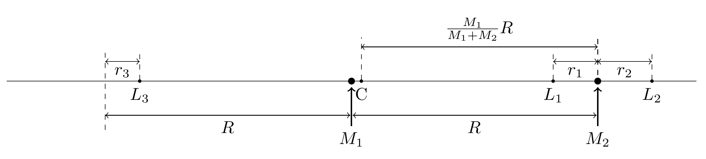

We discussed 3 root-finding algorithms to solve the equation $f(x) = 0$ in the previous lecture:
All of them involve some iteration procedure.
How do we know when to stop iterating?
How small is "small enough"?
Typically, we need to supply a given tolerance to the algorithm, letting it know that this the precision we would like to achieve.
There are two types of tolerance: absolute and relative.
For example, we can stop when $|f(x_n)| < 10^{-8}$, or when $|x_n - x_{n-1}| < 10^{-8}$. Both are given in absolute tolerance.
We can also choose to stop when $|1 - x_n/x_{n-1}| < 10^{-8}$. This is an example of relative tolerance.
Which tolerance should we use?
It depends on the problem:
Sometimes both are used together: $|x_n - y_n| < \epsilon_a + |y_n|\epsilon_r$.
You can use "templates" to write functions that accept a parameter of generic type, such as another function:
template <typename F>
double evaluate(const F& f, double x) {
return f(x);
}
Then you can pass in any function that takes a double and returns a double:
double square(double x) {
return x * x;
}
evaluate(square, 3.0); // returns 9.0
Another way to write this is to use a lambda function:
evaluate([](double x) { return x * x; }, 3.0); // returns 9.0
The structure [] (double x) { return x * x; } is
called a lambda function. It is essentially an anonymous function that
can be defined inline.
You can pass external variables to the lambda function in the [].
Anything inside will be "captured" within the function. You can use [&] to
capture everything by reference.
Function templates can be used to implement generic root-finding functions:
template <typename F>
double bisection(const F& f,
double a, double b,
double tolerance) {
// ...
}
This function can apply the bisection algorithm on an arbitrary function f on
an initial interval $[a, b]$, until the interval shrinks down to
within a given tolerence.
Length is never just $5$. It's $5\,\mathrm{km}$ or $5\,\mathrm{in}$ or $5\,\mathrm{mm}$.
Velocity is never just $42$. It's $42\,\mathrm{m/s}$ or $42\,\mathrm{km/h}$ or $42\,\mathrm{mi/h}$.
An equation is only valid if the units on both sides match.
Computers do not understand units. Mathematical functions also typically need to operate on dimensionless quantities:
E.g. $\sin(x)$, $\exp(x)$, $\log(x)$, $P_m(x)$, etc.
$\sin(5\,\mathrm{km})$ does not make sense.
This is the partial or full removal of physical dimensions from an equation involving physical quantities.
Very powerful technique to simplify the form of equations and extract intrinsic qualities of the system.
Also closely related to dimensional analysis.
Velocity can have many units: $\mathrm{m/s}$, $\mathrm{km/h}$, etc.
Its dimension is always $\mathrm{Length/Time}$.
Typically, we choose a set of reference units for all the physical quantities involved, that are intrinsic to the system.
Consider Planck's law of blackbody radiation:
$$ B_\nu(\nu, T) = \frac{2h\nu^3}{c^2}\frac{1}{e^{h\nu/ k_B T} - 1} $$I wish to know at what frequency gives the highest radiation intensity
Set $x = h\nu/k_B T$:
$$ B_\nu(x, T) = \frac{2(k_B T)^3}{c^2h^2}\frac{x^3}{e^x - 1} $$The maximum occurs where $dB_\nu/dx = 0$:
$$ e^x(3 - x) = 3 $$This is a simple mathematical equation (with no units) that can be plugged into a root-finding program. The result is $x \approx 2.82$. The maximum intensity occurs at $\nu \approx 2.82k_B T/h$.
Another example: the equation of motion for a pendulum:
$$ \frac{d^2\theta}{dt^2} + \frac{g}{L}\sin\theta = 0 $$$\theta$ is already dimensionless. What should be chosen to be the unit for time?
Choose a time unit $t_0 = \sqrt{L/g}$, and set $x = t/t_0$. We can write down a dimensionless equation:
$$ \frac{d^2\theta}{dx^2} + \sin\theta = 0 $$It's a significant simplification from the original equation, and gives us an intrinsic time scale $t_0$ which is related to the pendulum period.
Another example: Lagrange points
Location of $L_1$ is given by the following equation:
$$ \frac{GM_1}{(R - r_1)^2} - \frac{GM_2}{r_1^2} = \left(\frac{M_1}{M_1 + M_2}R - r_1\right)\frac{G(M_1 + M_2)}{R^3} $$$R$ is the natural length scale in the problem. Define $x_1 = r_1/R$.
The natural scale of mass is $M_1 + M_2$. Define $\mu = M_2/(M_1 + M_2)$. The other mass becomes $1 - \mu$.
The equation now becomes
$$ \frac{1 - \mu}{(1 - x_1)^2} - \frac{\mu}{x_1^2} = \left(1 - \mu - x_1\right) $$It's significantly simpler, and the number of numerical parameters has been reduced to only 1. This dimensionless equation can now be used with root-finding algorithms.
In the future, we will encounter many more examples of nondimensionalization. It will be even more important for differential equations.